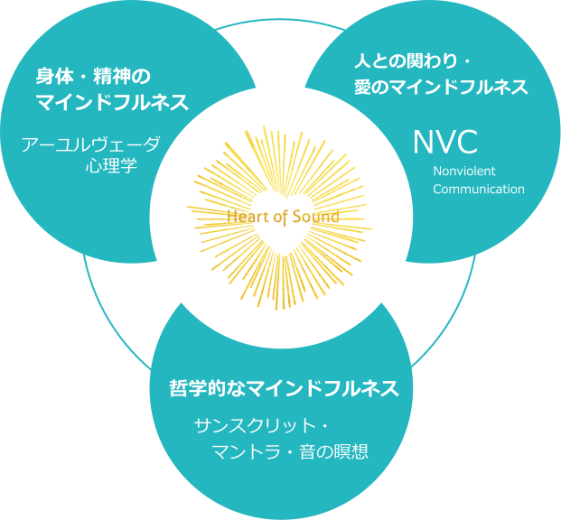

おうちに居ながら習得し、オンラインでヨガ教室を開講可能!
Microsoft社を始め世界中で注目を集めている
“マインドフルネスの極意”
=『心のヨガ』で
自分らしく本当の幸せに貢献できる!

世界でたった1つの“心のヨガ”RYS200取得講座
THE HEART OF SOUND
無料オンライン説明会
(各回限定5名)
自分らしく本当の
幸せに貢献できる！
こんなお悩みありませんか?
- もっとヨガの良さを伝えて生徒さんに来てもらいたい。
- 以前ヨガの資格を取ったが、さらに深い知識を学びたい。
- 自分の心と上手に向き合えるようになりたい。
- 好きな仕事を続けられるように資格を取りたい。
- 自分らしいやり方で自由に活動したい。
上記の様なお悩みを持っている方にお伝えしたいのが、世界でたった1つしかない
“心のヨガ”RYS200です。
世界中で需要が急増している
“マインドフルネスの極意”
＝
“心のヨガ”

今、Google社が採用した事をきっかけに、世界中でマインドフルネスの需要が急増しています。
故スティーヴ・ジョブズも『禅』と呼ばれるマインドフルネスを取り入れていましたし、ビル・ゲイツやマーク・ザッカーバーグ等、名だたるCEOやレディ・ガガ、マドンナ等、ハリウッドのセレブたちがこぞってマインドフルネスを取り入れています。
ですが実は・・・・・
そのマインドフルネスのさらに上をゆく概念のルーツが、私たちが愛しているヨガの源流にあったのです。
それが、ヨガの極意である“心のヨガ”です。
しかし、今までは心に特化したヨガを学べる機会はありませんでした。
もしあなた、今まで多くの時間を使ってヨガを学んでいるにも関わらず、
「学び足りない……」
「もっともっと学ぶべき事がある……」
と感じていたとしたら、それはヨガの源流を学べる機会がなかったからなのです。
そこで創設されたのが、世界初、心のヨガに特化した本格的な専門校、THE HEART OF SOUNDです。
ヨガの最も深い部分にある叡智を、濃縮して濃縮して濃縮して得られたエッセンスだけを学び、それを身体のヨガの知識と掛け合わせる事で、
あなたらしいやり方で、他の誰かの本当の幸せに貢献していけるようになります。
世界初・心のヨガに特化した全米ヨガアライアンス認定の専門校
THE HEART OF SOUNDとは?
2015年、世界で最も信頼のあるヨガライセンス機構『全米ヨガアライアンス』 が、世界で初めて全く前例のない「心のヨガに特化したトレーニング」を認定校と 認めました。
THE HEART OF SOUNDは、世界中で求められているマインドフルネスの極み を、身につけながら学べるコースです。
THE HEART OF SOUNDでは、わかりやすく言うと、
①身体・精神のマインドフルネス: アーユルヴェーダ心理学
②人との関わり・愛のマインドフルネス: NVC(Nonviolent Communication)
③哲学的なマインドフルネス: サンスクリット・マントラ・音の瞑想
の、「3つのマインドフルネス 」を学ぶことが出来ます。
①身体・精神のマインドフルネス：アーユルヴェーダ心理学
アーユルヴェーダ心理学では、人の体質・食・精神・感情・行動・才能・問題などを理解しケアする方法までを理解することで、ネガティブな事があった時にも必要以上にイライラしたり、落ち込んだりしない為のストレスマネジメントや、私たちが最も良い状態で能力を発揮できるように導く才能の育て方を学べます。
これを学ぶ事で、自分の生まれ持った才能に気がつく事が出来、それをどうすれば活かせる様になるのか、引き出せる様になるのかが分かります。

②人との関わり・愛のマインドフルネス：NVC(Nonviolent Communication)
Microsoft社が企業研修に取り入れ、世界中が学び始めている新しい心理学NVCと、ヨガ哲学より受け継がれる対話法Ahimsa Vac(アヒムサの言葉)。
この2つをミックスして学ぶ事で、人が本来持っている「共感・愛」のエネルギーを日常の中で使えるようになります。
現代人が心の奥にしまい込んでしまった“本音同士”でコミュニケーションが出来るようになり、対人関係が大きく変容するのを促します。
心と心を響き合わせ、愛に満ちたコミュニケーションが取れるようになります。
実際、NVCを活用する事で、離婚寸前の夫婦仲が円満になったり、Microsoft社では、社内のコミュニケーションが円滑になり、業績がV字回復したという事例がいくつもあります。
③哲学的なマインドフルネス：サンスクリット・マントラ・音の瞑想
サンスクリット語は約4500年前の古代インダス文明より、師から弟子へ口伝(くでん)のみで受け継がれてきた古語です。サンスクリット語を使ったマントラ瞑想を30分間×8週間行うと、
トラウマを受けて小さくなった脳のサイズが元にもどり、脳波が変わるというデータがあります。
これは、マントラ瞑想に正しく取り組むと、ストレスの原因を直接ケア出来、ネガティブの大元の原因が無くなるという事を裏付けています。
そして、これら3つのマインドフルネスに対して脳科学でエビデンスをつけ、コーチングスキルでより人を助けられるように学ぶのが、このTHE HEART OF SOUNDです。
どこにもない世界初の“心のヨガ”を学ぶ時間、本からでは学べない生きた神秘の響き、スピリチュアルなパワーの根拠まで、最先端の学びをあなたのものにしてください。
その他にも、サンスクリット基礎・なかなか学べない正確な発音・マントラの種類や意味・カルマの変え方・一元論哲学・エネルギー経路・音と体や脳の関係性・チャクラ・クラスデザインや指導法etc、わかりやすくしっかり経験しながら理解できます。
THE HEART OF SOUNDの
心のヨガRYS200なら・・・
世界中で求められ始めているマインドフルネスのさらなる上位概念を学ぶ事が出来ます。
基本のキから始めて、深い深い、人間の本質に通じるヨガを学べます。
あなた自身も、まるで生まれ変わり別人になった様に、仕事・恋愛・人間関係・健康、人生の全ての面が一気に良くなります。
もう一度自分らしく輝ける道を見つけ直す事が出来ます。
クライアントの心とあなたの心を響き合わせる事が出来、変容の喜びを分かちあえるようになります。
個別相談会への参加費用
無料
説明会参加特典
世界一進んだ心理学“NVC”実践ワーク動画…現代人は皆、自分の本当の感情に蓋をしながら、その摩擦に苦しんでいます。ですが、このMicrosoftも注目している“NVC”を実践していただければ、心の内側にあるポジティブな部分はもちろん、ネガティブな部分さえあなたのパワー(生命力)に生まれ変わりなります。
よくある質問
- Q.心のヨガRYS200を取っても身体のヨガを教える事は可能ですか?
- A.はい、可能です！HEART OF SOUNDは身体のヨガの知識と組み合わせる事でより深いレベルのクラスを開講出来ます。
(まだ身体のヨガの知識を持っていない方も心のヨガだけを教える事が出来ますし、追加料金で、安価で身体のヨガを学べる機会を作ろうと思います。) - Q.まずは心のヨガを受けてみたいのですが・・・
- A.THE HEART OF SOUNDではヨガインストラクターになるコースだけではなく、まず心のヨガを学んで自分の人生を変えたい、という方の為のコー スもご用意しています。
まずは説明会にお越しください。 - Q.他のヨガ資格を取っている最中なのですが・・・
- A.勉強熱心で素晴らしいと思います。
他のヨガ資格で学んだ内容とTHE HEART OF SOUNDの内容を掛け合わせる事でより深い知識を得ていく事が出来ます。 - Q.なんだか難しそうです・・・
- A.HEART OF SOUNDは体験→座学のプロセスで行うので、勉強が苦手な方でも楽しくわかりやすく学べます！
- Q.オンラインでも受講可能ですか？
- A.はい、オンラインで受講可能です！
THE HEART OF SOUND講 師
この文章はダミーです。文字の大きさ、量、字間、行間等を確認するために入れています。この文章はダミーです。文字の大きさ、量、字間、行間等を確認するために入れています。
-
マインドフルネス企業研修講師、NVC国際フェス登壇、環境アクティビスト
DAKE AYANA
バレエダンサーを経てシンガーソングライターとして活動。楽曲リリースのほか、楽曲提供やサウンドプロデュースも行う。2008年より音楽活動と共にヨガの指導をはじめ、音楽とヨーガやボイストレーニングを融合するプログラム製作、企業向けセミナー、サロンやスタジオディレクターを務める。2012年より、ヨガインストラクター養成講座を主宰。2015年には、アーナンドラ・ジョージと共に世界初の音のヨーガに特化したインストラクター養成講座を開講。また、長年子供たちへのチャリティーに積極的に参加し、世界的な非営利組織の初日本代表を務めるなど、貧しい子供と女性の自立支援を行っている。
-
世界的ヨガ指導者・マントラシンガー
ANANDRA GEORGE
17歳よりインド文化に興味を持ち、ヨーガ哲学やマントラを学ぶ。2000年頃よりサンスクリットマントラの指導をはじめ、2014年には米情報サイトAbout.com にて「ベストライフコーチ」にノミネートされる。2015年、ダケアヤナと共にインドと東京で、世界初で唯一のYogaAlliance認定「音のヨーガ・マントラ・哲学に特化したインストラクター養成講座 THEHEART OF SOUND」を開講。各国からのオファーを受けて、2016年より世界各地での開催を予定している。日本でのヨガフェスや、インドのインターナショナルヨガフェスティバルにも出演。近年はインド古典音楽も学び、マントラシンガーとしての活動にも積極的。